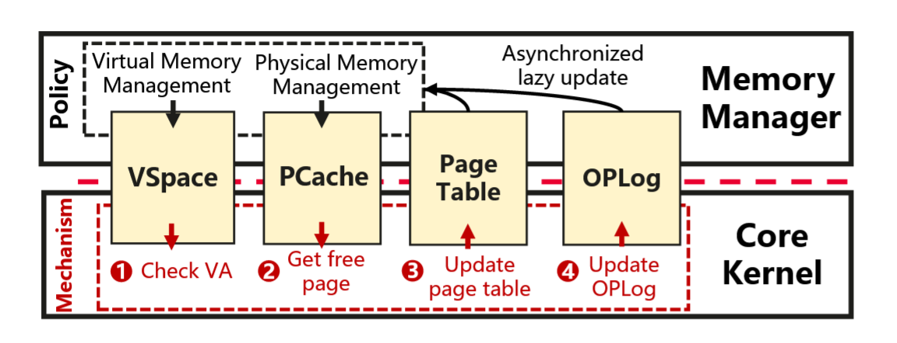

鸿蒙内核论文阅读分享
国庆假期，无心工作，便把之前一直想读却没时间读的鸿蒙内核论文：《Microkernel Goes General: Performance and Compatibility in the HongMeng Production Microkernel》拿出来读了一读，并记录下我的一些总结和想法。虽然操作系统内核是我的主要研究方向之一，但是平时的工作接触的都是 Linux 这样的宏内核操作系统，对微内核的了解只停留在理论层面，没有具体读过 Minix、seL4 等微内核的源码，甚至也没做过上交 IPADS 团队的 ChCore 操作系统实验，因此也只是一些粗浅的想法，图一乐就好。
实现了哪些特性
下图是论文中关于鸿蒙内核的架构图：
首先是同时实现了对 Linux API 和 ABI 的兼容，因此不仅能够通过编译源码的方式运行面向 Linux 开发的应用程序，对于那些不开放源代码，直接以二进制形式进行分发的应用程序，也能够基于兼容层——ABI-compliant Shim 实现运行时兼容。除此之外，还实现了一个设备驱动的兼容层——Linux Driver Container，能够直接复用 Linux 的驱动程序。此外，它能够同时支持 AOSP 和 OpenHarmony 两套框架，能够运行 Android 应用程序和 OpenHarmony 应用程序。
鸿蒙内核总体上遵循微内核的设计原则，即 操作系统内核仅保留必要的不可拆分的一部分，其余的部分都以服务的形式运行在用户态中 。但是引入了大量的折衷方案来实现可靠性和性能的平衡。
原文描述：HM respects the core design principles of microkernels but not to the extreme, with careful compromises to address the performance and compatibility challenges in emerging scenarios.
Linux 的问题
文中总结了 Linux 内核存在的许多不足之处：首先是安全性和可靠性，当前 Linux 内核源代码已经超过 3000w 行，其中有 80% 的代码都是文件系统和设备驱动这些模块，而它们贡献了 Linux 发现的绝大多数漏洞，并且这些漏洞大多数都可以通过引入合适的隔离机制来规避。
其次，Linux 内核主线的新特性引入基本是由服务端的需求来驱动的，这也并不奇怪，因为服务端确实是 Linux 最主要的应用领域。但是这可能会导致为其他应用场景带来负优化，而重新进行定制优化又需要大量的工程量。同时，由于内核 API 的频繁更新，这些专门的优化为了与主线进行同步，又可能带来大量额外的工作量，遇到接口差异过大的情况，甚至可能要重新进行设计。
部署微内核所观察到的运行特征
- 在新兴领域（智能手机、智能汽车等）中 IPC 频率迅速增长。因此只优化单次 IPC 的性能是不够的。
- 分布式多服务器场景下部署的微内核操作系统，由于缺乏一些统一的共享数据结构（如文件描述符表等），会导致状态双重记账（state double bookkeeping），造成内存资源的浪费。
- 能力机制（capability）的引入，虽然对内核对象进行了很好的保护，但是也导致了很大的性能开销。
- 生态的兼容性不仅应该局限于 POSIX 兼容，因为这无法应对应用程序以二进制形式进行分发的情况。
- 在新兴领域中进行部署需要高效的驱动复用。文中提到，对于智能手机和智能汽车这种复杂计算机系统来说，需要超过 700 个驱动程序被支持，而对这些驱动程序进行重写大概需要花费 5000 人年（person-years）的时间，同时还要花时间对其进行完善和迭代，成本异常巨大。
鸿蒙的性能设计
同步 RPC 式的 IPC 快速路径
微内核请求系统服务的方式是通过 IPC，但是 IPC 通常假设通信的双方是对等的并且具有相同的执行模型。但是在新兴领域中，作者观察到绝大多数的 IPC 都是过程调用，即通信的双方存在明显的调用者（caller）和被调用者（callee）之分。因此鸿蒙内核采用的服务请求模型是同步式的 RPC。
具体来说，鸿蒙内核采用了一种 RPC 式的线程迁移（thread migration）方法作为 IPC 快速路径。当发起 IPC 的时候，内核进行直接切换（direct switch），跳过调度器，并且只进行栈指针、pc 和保护域的切换。实现方法大概是：内核将服务函数的入口地址记录下来，同时准备一系列的执行栈池（其实就是预留一部分内存空间，并保留地址空间高地址作为栈指针）作为执行服务时的运行栈，应用请求服务时直接进行栈指针、pc 等的保留和恢复即可。
这样仅需要切换少数寄存器的快速路径仍然会面临性能问题，原因是涉及到特权级和地址空间切换，会导致 Cache/TLB “污染”（pollution），造成 Cache/TLB 产生更多的 miss，访存速度下降。
同时，IPC 还会带来一定的内存开销，严重时甚至可能导致 OOM（out-of-memory）。先前的一些研究工作尝试预分配栈池的方法，但是内存分配大小难以决策，因为每个请求服务的线程需要独立的栈。一种想法是在线程创建时就为该线程分配并绑定对应的服务栈，但是实际负载下的系统服务请求也大概遵循“二八定律”，存在大量的很少使用的系统服务，因此这种方法会导致大量的内存浪费。鸿蒙内核采用了一种折衷的方案：为使用频率高的服务进行预分配栈，而对于那些使用频率较低的服务则保留栈池的分配方式。
差异化的隔离层级
传统意义上的微内核设计要求只保留必要的内核（Core kernel）运行在内核态，其余的部分则以用户态进程的形式运行在用户态中。但是频繁的内核态/用户态切换会带来大量的性能开销。文中认为并非所有的服务都需要相同的隔离层级，为此引入了差异化隔离层级（differentiated isolation classes）的概念。具体来说，包含三种不同的层级：IC0、IC1、IC2.
对于 IC0 而言，该层级适用于那些经过形式化验证的、且对性能要求极高的服务。目前只有一个，也就是 Linux ABI 兼容层——ABI compliant shim。内核与该层级的服务没有任何隔离（或者说内核也是运行在该层级），内核与该层级服务的通信直接就是函数调用。
而 IC1 的要求相比 IC0 稍宽松，适用于那些经过验证、且对性能要求较高的服务。事实上，以处理器特权级的视角来看，IC1 和 IC0 一样，同样运行在内核模式（ARM 架构下为 EL1），但是引入了诸如 ARM watchpoint 和 Intel PKS 这样的硬件机制来防止跨域访问。也正是因为 IC1 与 IC0 同样运行在内核态，它们之间的切换也就带来了更小的开销。
这里的 ARM watchpoint 和 Intel PKS 我不太了解，或与类似于 AMD SEV-SNP 的 VMPL 机制？
IC2 则适用于那些对性能要求没那么高或包含第三方代码（如 Linux 驱动）的服务。该层级则直接运行在用户态下（ARM 架构下为 EL0），同时还引入不同的页表以带来地址空间的隔离。该隔离层级就是传统微内核服务所运行的层级，在此不过多赘述。
灵活的组合
传统的微内核设计要求不同的操作系统服务之间彼此相互独立，但是有时不同服务之间的协作关系是十分紧密的，强行隔离开势必带来高昂的开销。文中举了一个例子：当以文件映射（mmap）的方式访问文件内容时，由于文件内容被映射到了内存地址空间中，文件的读写需要频繁经过内存管理器，这种情景下文件系统和内存管理器两个服务就形成紧密的耦合关系，带来包括频繁 IPC 导致的运行时性能开销，以及状态（如 page cache）双重记账带来的内存占用开销。
鸿蒙内核为此采用了一种可配置的方法，将这些可能耦合的服务进行合并（coalesc），合并后的服务之间将不存在隔离，彼此之间的 IPC 将转变为函数调用。
这里所说的“合并”文中似乎没说具体是怎么实现的，感觉会很复杂。
基于地址令牌的访问控制
传统的微内核设计下，内核借助能力机制对内核对象进行保护，只有内核才能够对其进行直接访问，而系统服务要想访问则需要经过一个间接层。但是有些系统服务可能需要频繁地对内核对象（如页表）进行更新，这会带来大量的性能开销。
为了解决这个问题，鸿蒙内核采用了一种基于地址令牌（address token）的访问控制机制，如下图所示。
具体来说，每个内核对象都存放在一个特定的物理页面中。内核中维护了一个内核对象管理器（kernel object manager），要将对一个内核对象的访问权限授予某个系统服务，就需要直接将该对象对应的页面映射到该系统服务的地址空间中。这个映射得到的地址就作为一个“令牌”，允许系统服务直接对内核对象进行访问。这里的访问指的是直接经过硬件 MMU 完成虚实地址转换的访存，无需再次经过内核间接层的中转，效率大幅上升。
其中，与页表条目的权限控制类似，地址令牌也包含“只读”和“可读可写”权限的区别。对于授予了只读权限的地址令牌来说，系统服务对内核对象的写入需要借助专门的 writev 系统调用，并在进行写入操作前，内核将根据相关元数据确认系统服务是否具备写入的权限，这其实就类似传统微内核下基于间接层的内核对象访问模式。
无策略内核分页
为了保证对系统内存有一个全局的认识（global view），以高效地实现 cgroup 和内存回收等特性，鸿蒙内核没有采用一些微内核（如 seL4）所采用的分布式的 pager（不知道怎么翻译准确，叫分页管理器？），而是采用了集中式的设计。且为了最小内核原则，选择将 pager 放在内核之外。
但这样的设计会带来高昂的性能开销：在发生缺页异常时（假设是在用户态发生的），用户态陷入内核，在内核的缺页异常处理入口中，它将向内核之外的 pager 发起一个 IPC，随后 pager 对地址进行检查，若检查无误则分配一个新的页面，并返回到内核中对页表进行更新，最终返回用户态重新执行。
为了改善这样的性能问题， 鸿蒙内核将会提前基于策略做出决策，并将一个无策略（policy-free）的页面异常处理机制放在内核中 。具体来说，内存管理器会为一些匿名内存区域提供一些预分配的物理页面（如下图所示），如果页面异常在这些内存范围内触发，那么内核将直接将其映射到预分配的物理页面，并且记录下操作日志（OPLog），该日志将被内存管理器用于对其内部状态进行异步更新。如果页面异常没有在这些内存范围内触发或者预分配的物理内存页面用尽，那么内核将向内存管理器发起 IPC 以慢速路径来处理。

鸿蒙的兼容性设计
Linux ABI 兼容
鸿蒙内核实现 Linux ABI 兼容的基本设计采用了类似 WSL1 的方案：在 IC0 中引入 ABI-compliant shim，它会拦截应用程序发起的 Linux 系统调用，随后根据系统调用号的不同，将其通过 IPC 的方式转发至对应的系统服务来处理，以实现等价的功能。
这里所谓拦截应用程序的系统调用，具体点说就是架构相关的系统调用指令，比如 x86_64 架构下的 syscall，ARM 架构下的 svc。
但是传统的微内核设计下，很多状态都没有一个中心化的存储（central repository），例如文件描述符表，它保存在每个应用自己的地址空间中，这给很多系统调用的转译带来了麻烦。例如 fork，它不得不将分布在用户空间中的状态进行组装（assemble），这会引入巨大的复杂性和性能开销。因此一些 SOTA 微内核如 seL4、Fiasco 等直接选择不支持 fork，在 K42 中即便支持性能也非常差。
鸿蒙内核的解决方法是将 ABI-compliant shim 作为中心存储，将文件描述符表等数据结构的统一存放在其中。
这一块也有些似懂非懂。
驱动容器
先前的一些 Linux 驱动兼容方法，如移植和基于虚拟机的方法，都无法同时实现 高兼容性、合理的工程量以及不妥协的性能 。鸿蒙内核通过引入驱动容器（driver container）的方法，在这三者之间找到了一个甜点（sweet spot）。
驱动容器的基本设计方法为：通过复用 Linux 的代码，并将其作为用户空间的运行时，相当于为驱动程序提供了其所调用的 Linux 内核 API，这样就可以让驱动程序在无需修改的情况下直接运行，并能够直接对硬件设备进行访问。
这一块有些不理解，驱动容器在 HM 内核的设计下，按理说是运行在用户态（IC2）的，为什么能直接进行 I/O 操作？如果是内核将对应的 MMIO 地址 mmap 到驱动容器的地址空间中，是否会很不安全？
如下图所示，鸿蒙内核引入了驱动管理器（device manager），同时对 Linux 驱动容器和原生的驱动容器进行管理。除了初始化驱动容器之外，它还在 VFS 中注册一些入口，以便驱动通过 VFS 发起请求（如 ioctl）时，VFS 能够找到合适的驱动容器来完成处理。
基于驱动容器的方法，鸿蒙内核成功复用了超过 700 个 Linux 设备驱动，大部分驱动都可以无需修改直接正常工作，少部分执行了特权指令（如 smc）的驱动无法正常工作（因为驱动容器运行在用户态），这些驱动需要进行手动适配。
此外，鸿蒙内核还在原生驱动容器中引入了 twin driver 的设计，它将控制平面与数据平面分离以提升关键路径的性能。具体来说，它重写了数据处理的例程，以便它可以被施加更弱的隔离机制（运行在 IC1 而不是 IC2），带来性能的提升。而控制平面这样包含复杂例程（如 init/resume 等）的仍然运行在 IC2 中。这样的分离设计也会带来状态同步等复杂的问题，因此它只用在一些性能关键的驱动中，如 UFS 驱动。
总结
鸿蒙内核的 core kernel 在 C 语言的一些限制子集中实现，总共包含约 9w 行代码。各操作系统服务之间相互解耦，可以单独部署，总代码量超过 100w 行。鸿蒙内核的构建系统可以根据各场景来配置和组装操作系统服务，包括前面提到的多个服务之间组合。
经过前文的设计描述可以看到，鸿蒙内核作为一个商用的通用内核，不同于那些更偏学术的 SOTA 微内核，可谓处处充满了 trade-off。性能分析的部分本文就不再具体分析了，感兴趣的可以前往阅读原文，最后以论文第七章——Lessons and Experiences 的小结来结束本文的内容：
- 首先实现兼容，然后逐渐过渡到原生。
- 仅有技术规范是不够的，还需要通过大规模测试来检验兼容性。
- 先部署，然后再持续优化。
- 尽可能使用自动化验证技术。
- 规模效应可能会导致的硬件故障/缺陷被放大。
- 大（粗粒度）内核锁在新兴领域下缺乏可扩展性。
 微信
微信 支付宝
支付宝